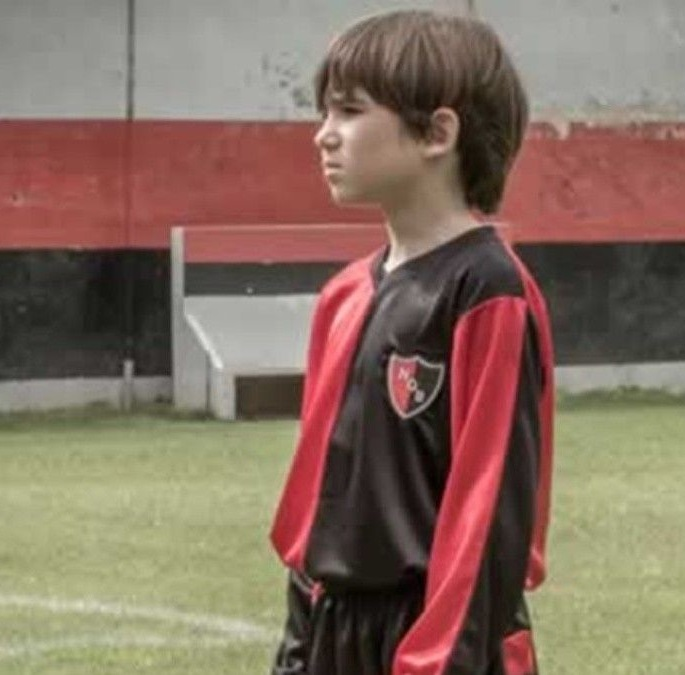
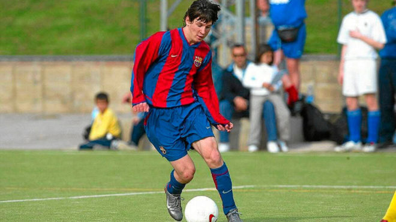
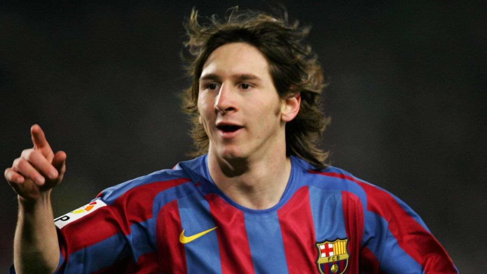
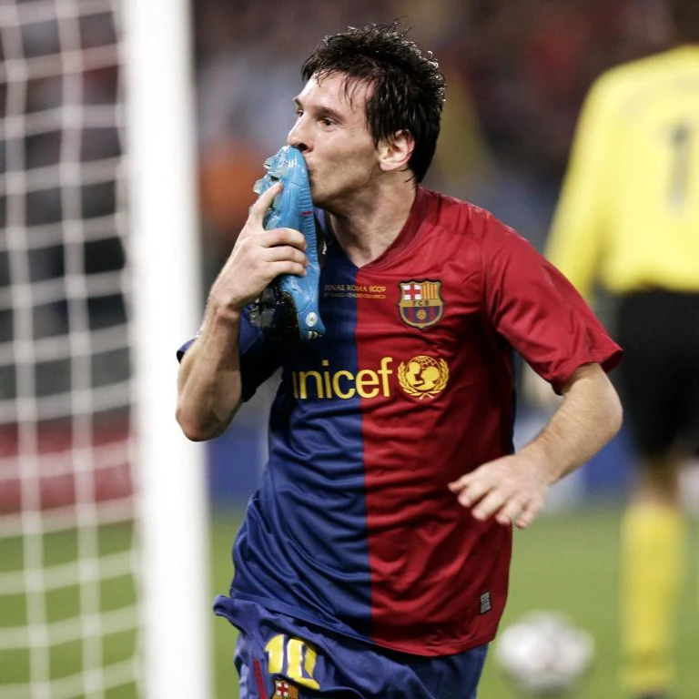
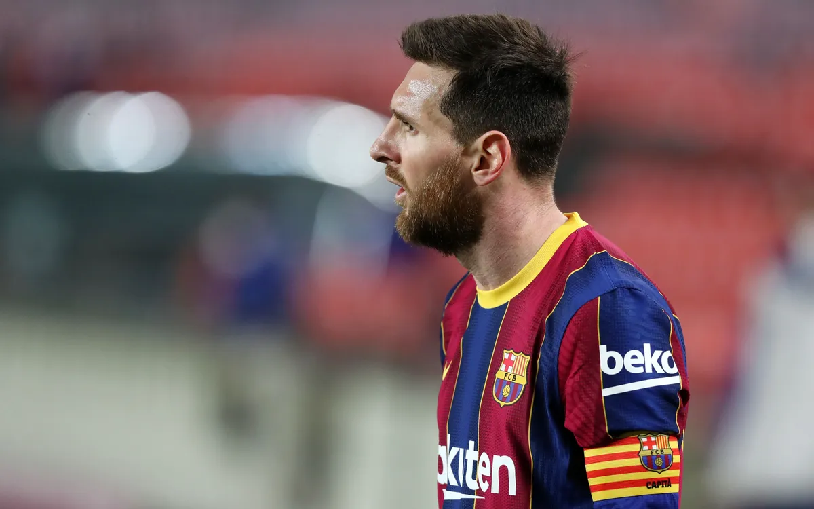
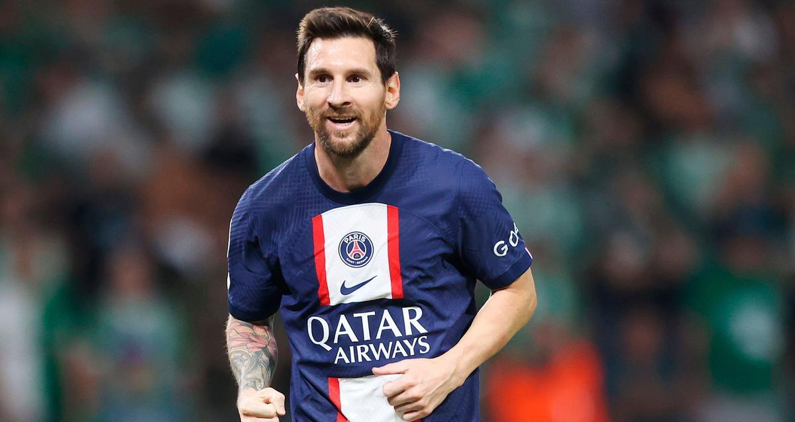

Trayectoria en Clubes
Con cinco años se inició en el Grandoli, un pequeño equipo de su barrio que entrenaba su padre
En 1995, pasó a entrenarse en las categorías inferiores de Newells Old Boys, club con el que ganó la Copa de la Amistad de Perú en 1997. y en 1998 ganó el torneo Ciudad de Balcarce, en la provincia de Buenos Aires, en el que Messi marcó quince goles en seis partidos. En este período, Messi convirtió 234 goles, con un promedio de 1,32 por partido.
A los ocho años le diagnosticaron una deficiencia en la hormona del crecimiento, que le impedía tener un desarrollo físico normal. El tratamiento era muy caro y sus padres no podían costearlo.
Leo Messi fue descubierto por el Fútbol Club Barcelona. Dejó el Club Atlético Newells Old Boys de Rosario para trasladarse a Europa junto con su familia, donde el club azulgrana le costeó los gastos de su enfermedad hormonal (900 USD por mes). Durante varios años recibió diariamente dos inyecciones de la hormona de crecimiento ayudándolo a crecer 23 centímetros. Finalmente, llegó a alcanzar los 1,70 centímetros de estatura y gasta una talla 40 de pie.
Messi debutó en el primer equipo del FC Barcelona en diciembre de 2003, en un partido amistoso ante el FC Porto entrenado por José Mourinho, aunque su debut en partido oficial llegó al año siguiente, en la temporada 2004/2005, en un partido de liga ante el RCD Espanyol, convirtiéndose en el jugador más joven del Barcelona en jugar un partido de la Primera División de la Liga Española (16 años).
Lo demás es historia reciente. A sus 17 años la Pulga marcaba su primer gol como profesional en el Barça en un partido contra el Albacete, y se convertía en el jugador más joven del equipo azulgrana en lograr un tanto en la Liga española. Durante esa temporada 2004-2005, las lesiones que arrastraban algunas figuras del primer equipo y su brillante trayectoria en el filial hicieron que fuese un habitual en las convocatorias y que contribuyera a la consecución del título de Liga, el primero de su palmarés.
Pero la progresión del ariete no había hecho más que empezar. La temporada 2005-2006, después de un gran debut en el trofeo Joan Gamper contra la Juventus de Turín, fue ya sin duda una buena campaña, aunque una lesión muscular lo apartó de los terrenos de juego en el tramo final de la competición. Se exhibió en el Santiago Bernabéu, en un memorable partido en el que los azulgranas vencieron al Real Madrid por 0-3, y en Stamford Bridge, en los octavos de final de la Liga de Campeones contra el Chelsea. El resultado de la temporada para el equipo de Frank Rijkaard no pudo ser mejor: ganó la Supercopa de España, la Liga y la Liga de Campeones, la segunda de su historia.
En la campaña 2008/2009 Messi completó su primera temporada sin lesiones y superó su récord de partidos jugados (51) y goles (38). El argentino fue decisivo en las finales de Copa y Champions, marcó el segundo gol del Barça en cada una de ellas, y, entre goles antológicos, fue el artífice de dos de los seis tantos que encajó el Real Madrid en el Santiago Bernabéu.
En los años siguientes, Lionel Messi siguió rompiendo récord tras récord a la vez que se iba perfilando como el mejor jugador del Barcelona y del mundo en general. La mejor campaña individual de Messi a la fecha en términos estadísticos fue la temporada 2011-12, en la que batió los récords españoles y europeos de más goles marcados en una única temporada, además de haberse convertido en el máximo goleador del Barça en competiciones oficiales. Tras cada partido, el crack zurdo argentino demostraba ser lo suficientemente versátil como para jugar en cualquier posición de la línea delantera e hipnotizar a los defensores con una mezcla de destreza y velocidad.
Después de dos temporadas difíciles, un nuevo resurgimiento del esplendor del Barça con el desembarco como técnico de Luis Enrique, antiguo jugador azulgrana que, tras su incorporación a principios de la temporada 2014-2015, justo a la finalización del Mundial, ha sabido dotar al equipo de nuevos registros más allá del fútbol «al primer toque» de Guardiola, reforzando su verticalidad (con precisos pases largos que sorprenden y superan las líneas rivales) y la potencia del contraataque.
Sumando a ello la plena recuperación de Leo Messi y su perfecto entendimiento con las nuevas incorporaciones en la delantera (el extremo brasileño Neymar, joven promesa y probable sucesor de Messi, y el uruguayo Luis Suárez como killer o rematador), el Barcelona reeditó en la temporada 2014-2015 los éxitos de 2009 adjudicándose por segunda el vez el triplete (la Liga española, la Copa del Rey y la Liga de Campeones), y a punto estuvo de igualar los seis títulos en año natural al proclamarse campeón de la Supercopa de Europa y del Mundial de Clubes al inicio de la temporada 2015-2016.
Luego de todos esto el FC Barcelona empezó a caer en una decadencia año tras año consiguiendo una dependecia sobre Messi que era lo único que mantenía a flote el club. Messi durante estos años logra ganar cuatro botas de oro europeas y un balón de oro consagrándose como el máximo ganador de estas distinciones con seis de botas de oro y seis balones de oro
El 5 de agosto de 2021 se supo que Leo Messi no seguiría en el FC Barcelona tras el parón en las negociaciones por su renovación. En un comunicado del club azulgrana despide al argentino, al mejor jugador de su historia, por no poder inscribirle en LaLiga. El comunicado dice que: "A pesar de haberse llegado a un acuerdo entre el FC Barcelona y Leo Messi y con la clara intención de ambas partes de firmar un nuevo contrato en el día de hoy, no se podrá formalizar debido a obstáculos económicos y estructurales (normativa de LaLiga española)"".
La renovación de Leo Messi por el FC Barcelona estaba encarrilada y a falta de firma. El acuerdo era total y solo faltaba un encuentro entre Jorge Messi (padre de Messi) y el presidente Joan Laporta para concretarlo y dar inicio a los actos de renovación. La reunión tuvo lugar el jueves día cinco en Barcelona y en ella se comentó la dificultad de inscripción de Leo Messi por parte del Barça lo que ha provocado un frenazo en las negociaciones.
El PSG (Paris Saint-Germain Football Club) informó que la rueda de prensa de presentación de Messi como nuevo jugador del equipo para el 11 de agosto de 2021 a las 11.00 horas en el auditorio del Parque de los Príncipes.
Después de cambiar de club por primera vez en su carrera tuvo un periodo de adaptación muy largo y junto conuna primera temporada con muchas interrupciones debido a lesiones, convocatorias con la selección argentina y contagio por coronavirus Messi afrontó una de sus peores temporadas a nivel estadístico además de un nuevo fracaso en Champions.
Durante el curso de su primera temporada gana su septimo balón de oro por su temporada pasada aunque al final de la temporada no fue nominado a la entrega del año 2022 debido a su bajo rendimiento.
Iniciando la temporada 2022/2023, el 31 de julio, en el Estadio de Bloomfield de Tel Aviv, Messi marcó, con la derecha, el primer gol del 4-0 contra Nantes, resultado con el que el PSG ganó la Supercopa de Francia, su primer título de la temporada.
El 6 de agosto, en la primera fecha de la Ligue 1, jugada en el Stade Gabriel Montpied contra Clermont Foot, hizo un doblete en el 5-0 de su equipo. El segundo gol, anotado de chilena, fue el primero que marcó de esta forma. En enero de 2023, la IFFHS lo reconoció Mejor Goleador Internacional y Mejor Jugador del Mundo, en el segundo caso por una significativa diferencia de votos (275 contra 35 y 30) con Mbappé y Benzema.